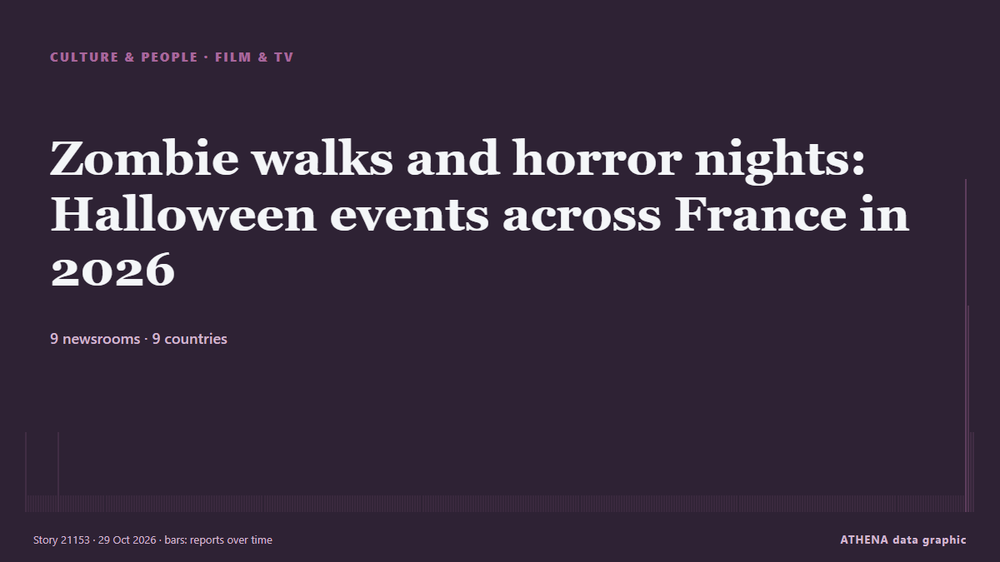

Culture & PeopleTitle card. 9 newsrooms in 9 countries Coverage: reports every 48 h
Zombie walks and horror nights: Halloween events across France in 2026

This year, Halloween falls on Saturday, October 31st, making it a good year for a weekend of spooky events. from The Local France
In brief
Reported independently by 9 outlets in 9 countries since 4 Oct, first by The Local Sweden; coverage is fading. Sport and culture stories are filed, not risk-assessed. Confidence is 87% (high), with 9 independent outlets corroborating it and an average source reliability of 68%. Newsrooms by country: United Kingdom (4), Sweden (1), Italy (1). Coverage: 4 Oct to 29 Oct, 18123 hours.
What changed: 1 new report in the 24 hours to 29 Oct.
At a glance
4.1Importance
—Not risk-assessed
87%Confidence
Selected, scored and written by ATHENA's published methodology. No editor intervenes in individual events. How this is produced ›
| 04 Oct 12:30 UTC | 1 |
|---|---|
| 06 Oct 12:30 UTC | 0 |
| 08 Oct 12:30 UTC | 0 |
| 10 Oct 12:30 UTC | 0 |
| 12 Oct 12:30 UTC | 0 |
| 14 Oct 12:30 UTC | 0 |
| 16 Oct 12:30 UTC | 0 |
| 18 Oct 12:30 UTC | 0 |
| 20 Oct 12:30 UTC | 0 |
| 22 Oct 12:30 UTC | 0 |
| 24 Oct 12:30 UTC | 0 |
| 26 Oct 12:30 UTC | 0 |
| 28 Oct 12:30 UTC | 0 |
| 30 Oct 12:30 UTC | 1 |
| 01 Nov 12:30 UTC | 0 |
| 03 Nov 12:30 UTC | 0 |
| 05 Nov 12:30 UTC | 0 |
| 07 Nov 12:30 UTC | 0 |
| 09 Nov 12:30 UTC | 0 |
| 11 Nov 12:30 UTC | 0 |
| 13 Nov 12:30 UTC | 0 |
| 15 Nov 12:30 UTC | 0 |
| 17 Nov 12:30 UTC | 0 |
| 19 Nov 12:30 UTC | 0 |
| 21 Nov 12:30 UTC | 0 |
| 23 Nov 12:30 UTC | 0 |
| 25 Nov 12:30 UTC | 0 |
| 27 Nov 12:30 UTC | 0 |
| 29 Nov 12:30 UTC | 0 |
| 01 Dec 12:30 UTC | 0 |
| 03 Dec 12:30 UTC | 0 |
| 05 Dec 12:30 UTC | 0 |
| 07 Dec 12:30 UTC | 0 |
| 09 Dec 12:30 UTC | 0 |
| 11 Dec 12:30 UTC | 0 |
| 13 Dec 12:30 UTC | 0 |
| 15 Dec 12:30 UTC | 0 |
| 17 Dec 12:30 UTC | 0 |
| 19 Dec 12:30 UTC | 0 |
| 21 Dec 12:30 UTC | 0 |
| 23 Dec 12:30 UTC | 0 |
| 25 Dec 12:30 UTC | 0 |
| 27 Dec 12:30 UTC | 0 |
| 29 Dec 12:30 UTC | 0 |
| 31 Dec 12:30 UTC | 0 |
| 02 Jan 12:30 UTC | 0 |
| 04 Jan 12:30 UTC | 0 |
| 06 Jan 12:30 UTC | 0 |
| 08 Jan 12:30 UTC | 0 |
| 10 Jan 12:30 UTC | 0 |
| 12 Jan 12:30 UTC | 0 |
| 14 Jan 12:30 UTC | 0 |
| 16 Jan 12:30 UTC | 0 |
| 18 Jan 12:30 UTC | 0 |
| 20 Jan 12:30 UTC | 0 |
| 22 Jan 12:30 UTC | 0 |
| 24 Jan 12:30 UTC | 0 |
| 26 Jan 12:30 UTC | 0 |
| 28 Jan 12:30 UTC | 0 |
| 30 Jan 12:30 UTC | 0 |
| 01 Feb 12:30 UTC | 0 |
| 03 Feb 12:30 UTC | 0 |
| 05 Feb 12:30 UTC | 0 |
| 07 Feb 12:30 UTC | 0 |
| 09 Feb 12:30 UTC | 0 |
| 11 Feb 12:30 UTC | 0 |
| 13 Feb 12:30 UTC | 0 |
| 15 Feb 12:30 UTC | 0 |
| 17 Feb 12:30 UTC | 0 |
| 19 Feb 12:30 UTC | 0 |
| 21 Feb 12:30 UTC | 0 |
| 23 Feb 12:30 UTC | 0 |
| 25 Feb 12:30 UTC | 0 |
| 27 Feb 12:30 UTC | 0 |
| 01 Mar 12:30 UTC | 0 |
| 03 Mar 12:30 UTC | 0 |
| 05 Mar 12:30 UTC | 0 |
| 07 Mar 12:30 UTC | 0 |
| 09 Mar 12:30 UTC | 0 |
| 11 Mar 12:30 UTC | 0 |
| 13 Mar 12:30 UTC | 0 |
| 15 Mar 12:30 UTC | 0 |
| 17 Mar 12:30 UTC | 0 |
| 19 Mar 12:30 UTC | 0 |
| 21 Mar 12:30 UTC | 0 |
| 23 Mar 12:30 UTC | 0 |
| 25 Mar 12:30 UTC | 0 |
| 27 Mar 12:30 UTC | 0 |
| 29 Mar 12:30 UTC | 0 |
| 31 Mar 12:30 UTC | 0 |
| 02 Apr 12:30 UTC | 0 |
| 04 Apr 12:30 UTC | 0 |
| 06 Apr 12:30 UTC | 0 |
| 08 Apr 12:30 UTC | 0 |
| 10 Apr 12:30 UTC | 0 |
| 12 Apr 12:30 UTC | 0 |
| 14 Apr 12:30 UTC | 0 |
| 16 Apr 12:30 UTC | 0 |
| 18 Apr 12:30 UTC | 0 |
| 20 Apr 12:30 UTC | 0 |
| 22 Apr 12:30 UTC | 0 |
| 24 Apr 12:30 UTC | 0 |
| 26 Apr 12:30 UTC | 0 |
| 28 Apr 12:30 UTC | 0 |
| 30 Apr 12:30 UTC | 0 |
| 02 May 12:30 UTC | 0 |
| 04 May 12:30 UTC | 0 |
| 06 May 12:30 UTC | 0 |
| 08 May 12:30 UTC | 0 |
| 10 May 12:30 UTC | 0 |
| 12 May 12:30 UTC | 0 |
| 14 May 12:30 UTC | 0 |
| 16 May 12:30 UTC | 0 |
| 18 May 12:30 UTC | 0 |
| 20 May 12:30 UTC | 0 |
| 22 May 12:30 UTC | 0 |
| 24 May 12:30 UTC | 0 |
| 26 May 12:30 UTC | 0 |
| 28 May 12:30 UTC | 0 |
| 30 May 12:30 UTC | 0 |
| 01 Jun 12:30 UTC | 0 |
| 03 Jun 12:30 UTC | 0 |
| 05 Jun 12:30 UTC | 0 |
| 07 Jun 12:30 UTC | 0 |
| 09 Jun 12:30 UTC | 0 |
| 11 Jun 12:30 UTC | 0 |
| 13 Jun 12:30 UTC | 0 |
| 15 Jun 12:30 UTC | 0 |
| 17 Jun 12:30 UTC | 0 |
| 19 Jun 12:30 UTC | 0 |
| 21 Jun 12:30 UTC | 0 |
| 23 Jun 12:30 UTC | 0 |
| 25 Jun 12:30 UTC | 0 |
| 27 Jun 12:30 UTC | 0 |
| 29 Jun 12:30 UTC | 0 |
| 01 Jul 12:30 UTC | 0 |
| 03 Jul 12:30 UTC | 0 |
| 05 Jul 12:30 UTC | 0 |
| 07 Jul 12:30 UTC | 0 |
| 09 Jul 12:30 UTC | 0 |
| 11 Jul 12:30 UTC | 0 |
| 13 Jul 12:30 UTC | 0 |
| 15 Jul 12:30 UTC | 0 |
| 17 Jul 12:30 UTC | 0 |
| 19 Jul 12:30 UTC | 0 |
| 21 Jul 12:30 UTC | 0 |
| 23 Jul 12:30 UTC | 0 |
| 25 Jul 12:30 UTC | 0 |
| 27 Jul 12:30 UTC | 0 |
| 29 Jul 12:30 UTC | 0 |
| 31 Jul 12:30 UTC | 0 |
| 02 Aug 12:30 UTC | 0 |
| 04 Aug 12:30 UTC | 0 |
| 06 Aug 12:30 UTC | 0 |
| 08 Aug 12:30 UTC | 0 |
| 10 Aug 12:30 UTC | 0 |
| 12 Aug 12:30 UTC | 0 |
| 14 Aug 12:30 UTC | 0 |
| 16 Aug 12:30 UTC | 0 |
| 18 Aug 12:30 UTC | 0 |
| 20 Aug 12:30 UTC | 0 |
| 22 Aug 12:30 UTC | 0 |
| 24 Aug 12:30 UTC | 0 |
| 26 Aug 12:30 UTC | 0 |
| 28 Aug 12:30 UTC | 0 |
| 30 Aug 12:30 UTC | 0 |
| 01 Sep 12:30 UTC | 0 |
| 03 Sep 12:30 UTC | 0 |
| 05 Sep 12:30 UTC | 0 |
| 07 Sep 12:30 UTC | 0 |
| 09 Sep 12:30 UTC | 0 |
| 11 Sep 12:30 UTC | 0 |
| 13 Sep 12:30 UTC | 0 |
| 15 Sep 12:30 UTC | 0 |
| 17 Sep 12:30 UTC | 0 |
| 19 Sep 12:30 UTC | 0 |
| 21 Sep 12:30 UTC | 0 |
| 23 Sep 12:30 UTC | 0 |
| 25 Sep 12:30 UTC | 0 |
| 27 Sep 12:30 UTC | 0 |
| 29 Sep 12:30 UTC | 0 |
| 01 Oct 12:30 UTC | 0 |
| 03 Oct 12:30 UTC | 0 |
| 05 Oct 12:30 UTC | 0 |
| 07 Oct 12:30 UTC | 0 |
| 09 Oct 12:30 UTC | 0 |
| 11 Oct 12:30 UTC | 0 |
| 13 Oct 12:30 UTC | 0 |
| 15 Oct 12:30 UTC | 0 |
| 17 Oct 12:30 UTC | 0 |
| 19 Oct 12:30 UTC | 0 |
| 21 Oct 12:30 UTC | 0 |
| 23 Oct 12:30 UTC | 0 |
| 25 Oct 12:30 UTC | 0 |
| 27 Oct 12:30 UTC | 0 |
| 29 Oct 12:30 UTC | 0 |
| 31 Oct 12:30 UTC | 0 |
| 02 Nov 12:30 UTC | 0 |
| 04 Nov 12:30 UTC | 0 |
| 06 Nov 12:30 UTC | 0 |
| 08 Nov 12:30 UTC | 0 |
| 10 Nov 12:30 UTC | 0 |
| 12 Nov 12:30 UTC | 0 |
| 14 Nov 12:30 UTC | 0 |
| 16 Nov 12:30 UTC | 0 |
| 18 Nov 12:30 UTC | 0 |
| 20 Nov 12:30 UTC | 0 |
| 22 Nov 12:30 UTC | 0 |
| 24 Nov 12:30 UTC | 0 |
| 26 Nov 12:30 UTC | 0 |
| 28 Nov 12:30 UTC | 0 |
| 30 Nov 12:30 UTC | 0 |
| 02 Dec 12:30 UTC | 0 |
| 04 Dec 12:30 UTC | 0 |
| 06 Dec 12:30 UTC | 0 |
| 08 Dec 12:30 UTC | 0 |
| 10 Dec 12:30 UTC | 0 |
| 12 Dec 12:30 UTC | 0 |
| 14 Dec 12:30 UTC | 0 |
| 16 Dec 12:30 UTC | 0 |
| 18 Dec 12:30 UTC | 0 |
| 20 Dec 12:30 UTC | 0 |
| 22 Dec 12:30 UTC | 0 |
| 24 Dec 12:30 UTC | 0 |
| 26 Dec 12:30 UTC | 0 |
| 28 Dec 12:30 UTC | 0 |
| 30 Dec 12:30 UTC | 0 |
| 01 Jan 12:30 UTC | 0 |
| 03 Jan 12:30 UTC | 0 |
| 05 Jan 12:30 UTC | 0 |
| 07 Jan 12:30 UTC | 0 |
| 09 Jan 12:30 UTC | 0 |
| 11 Jan 12:30 UTC | 0 |
| 13 Jan 12:30 UTC | 0 |
| 15 Jan 12:30 UTC | 0 |
| 17 Jan 12:30 UTC | 0 |
| 19 Jan 12:30 UTC | 0 |
| 21 Jan 12:30 UTC | 0 |
| 23 Jan 12:30 UTC | 0 |
| 25 Jan 12:30 UTC | 0 |
| 27 Jan 12:30 UTC | 0 |
| 29 Jan 12:30 UTC | 0 |
| 31 Jan 12:30 UTC | 0 |
| 02 Feb 12:30 UTC | 0 |
| 04 Feb 12:30 UTC | 0 |
| 06 Feb 12:30 UTC | 0 |
| 08 Feb 12:30 UTC | 0 |
| 10 Feb 12:30 UTC | 0 |
| 12 Feb 12:30 UTC | 0 |
| 14 Feb 12:30 UTC | 0 |
| 16 Feb 12:30 UTC | 0 |
| 18 Feb 12:30 UTC | 0 |
| 20 Feb 12:30 UTC | 0 |
| 22 Feb 12:30 UTC | 0 |
| 24 Feb 12:30 UTC | 0 |
| 26 Feb 12:30 UTC | 0 |
| 28 Feb 12:30 UTC | 0 |
| 02 Mar 12:30 UTC | 0 |
| 04 Mar 12:30 UTC | 0 |
| 06 Mar 12:30 UTC | 0 |
| 08 Mar 12:30 UTC | 0 |
| 10 Mar 12:30 UTC | 0 |
| 12 Mar 12:30 UTC | 0 |
| 14 Mar 12:30 UTC | 0 |
| 16 Mar 12:30 UTC | 0 |
| 18 Mar 12:30 UTC | 0 |
| 20 Mar 12:30 UTC | 0 |
| 22 Mar 12:30 UTC | 0 |
| 24 Mar 12:30 UTC | 0 |
| 26 Mar 12:30 UTC | 0 |
| 28 Mar 12:30 UTC | 0 |
| 30 Mar 12:30 UTC | 0 |
| 01 Apr 12:30 UTC | 0 |
| 03 Apr 12:30 UTC | 0 |
| 05 Apr 12:30 UTC | 0 |
| 07 Apr 12:30 UTC | 0 |
| 09 Apr 12:30 UTC | 0 |
| 11 Apr 12:30 UTC | 0 |
| 13 Apr 12:30 UTC | 0 |
| 15 Apr 12:30 UTC | 0 |
| 17 Apr 12:30 UTC | 0 |
| 19 Apr 12:30 UTC | 0 |
| 21 Apr 12:30 UTC | 0 |
| 23 Apr 12:30 UTC | 0 |
| 25 Apr 12:30 UTC | 0 |
| 27 Apr 12:30 UTC | 0 |
| 29 Apr 12:30 UTC | 0 |
| 01 May 12:30 UTC | 0 |
| 03 May 12:30 UTC | 0 |
| 05 May 12:30 UTC | 0 |
| 07 May 12:30 UTC | 0 |
| 09 May 12:30 UTC | 0 |
| 11 May 12:30 UTC | 0 |
| 13 May 12:30 UTC | 0 |
| 15 May 12:30 UTC | 0 |
| 17 May 12:30 UTC | 0 |
| 19 May 12:30 UTC | 0 |
| 21 May 12:30 UTC | 0 |
| 23 May 12:30 UTC | 0 |
| 25 May 12:30 UTC | 0 |
| 27 May 12:30 UTC | 0 |
| 29 May 12:30 UTC | 0 |
| 31 May 12:30 UTC | 0 |
| 02 Jun 12:30 UTC | 0 |
| 04 Jun 12:30 UTC | 0 |
| 06 Jun 12:30 UTC | 0 |
| 08 Jun 12:30 UTC | 0 |
| 10 Jun 12:30 UTC | 0 |
| 12 Jun 12:30 UTC | 0 |
| 14 Jun 12:30 UTC | 0 |
| 16 Jun 12:30 UTC | 0 |
| 18 Jun 12:30 UTC | 0 |
| 20 Jun 12:30 UTC | 0 |
| 22 Jun 12:30 UTC | 0 |
| 24 Jun 12:30 UTC | 0 |
| 26 Jun 12:30 UTC | 0 |
| 28 Jun 12:30 UTC | 0 |
| 30 Jun 12:30 UTC | 0 |
| 02 Jul 12:30 UTC | 0 |
| 04 Jul 12:30 UTC | 0 |
| 06 Jul 12:30 UTC | 0 |
| 08 Jul 12:30 UTC | 0 |
| 10 Jul 12:30 UTC | 0 |
| 12 Jul 12:30 UTC | 0 |
| 14 Jul 12:30 UTC | 0 |
| 16 Jul 12:30 UTC | 0 |
| 18 Jul 12:30 UTC | 0 |
| 20 Jul 12:30 UTC | 0 |
| 22 Jul 12:30 UTC | 0 |
| 24 Jul 12:30 UTC | 0 |
| 26 Jul 12:30 UTC | 0 |
| 28 Jul 12:30 UTC | 0 |
| 30 Jul 12:30 UTC | 0 |
| 01 Aug 12:30 UTC | 0 |
| 03 Aug 12:30 UTC | 0 |
| 05 Aug 12:30 UTC | 0 |
| 07 Aug 12:30 UTC | 0 |
| 09 Aug 12:30 UTC | 0 |
| 11 Aug 12:30 UTC | 0 |
| 13 Aug 12:30 UTC | 0 |
| 15 Aug 12:30 UTC | 0 |
| 17 Aug 12:30 UTC | 0 |
| 19 Aug 12:30 UTC | 0 |
| 21 Aug 12:30 UTC | 0 |
| 23 Aug 12:30 UTC | 0 |
| 25 Aug 12:30 UTC | 0 |
| 27 Aug 12:30 UTC | 0 |
| 29 Aug 12:30 UTC | 0 |
| 31 Aug 12:30 UTC | 0 |
| 02 Sep 12:30 UTC | 0 |
| 04 Sep 12:30 UTC | 0 |
| 06 Sep 12:30 UTC | 0 |
| 08 Sep 12:30 UTC | 0 |
| 10 Sep 12:30 UTC | 0 |
| 12 Sep 12:30 UTC | 0 |
| 14 Sep 12:30 UTC | 0 |
| 16 Sep 12:30 UTC | 0 |
| 18 Sep 12:30 UTC | 0 |
| 20 Sep 12:30 UTC | 0 |
| 22 Sep 12:30 UTC | 0 |
| 24 Sep 12:30 UTC | 0 |
| 26 Sep 12:30 UTC | 0 |
| 28 Sep 12:30 UTC | 0 |
| 30 Sep 12:30 UTC | 0 |
| 02 Oct 12:30 UTC | 0 |
| 04 Oct 12:30 UTC | 0 |
| 06 Oct 12:30 UTC | 0 |
| 08 Oct 12:30 UTC | 0 |
| 10 Oct 12:30 UTC | 0 |
| 12 Oct 12:30 UTC | 0 |
| 14 Oct 12:30 UTC | 0 |
| 16 Oct 12:30 UTC | 0 |
| 18 Oct 12:30 UTC | 0 |
| 20 Oct 12:30 UTC | 0 |
| 22 Oct 12:30 UTC | 5 |
| 24 Oct 12:30 UTC | 3 |
| 26 Oct 12:30 UTC | 1 |
| 28 Oct 12:30 UTC | 1 |
Why these numbers
Importance
Reach
9 countries
Breadth
9 outlets
Novelty vs the archive
75 % new
Diversity
2 ownership types
Risk
—
Confidence
Independent corroboration
9 independent outlet(s), 12 original report(s) (0 wire copies excluded)
Reliability of the reporting sources
mean 68 % over 12 rated outlet(s)
Independent countries
9 countries
Stability of the reporting
0 % silently edited · 0 % estimated dates · 0 disputed claim(s)
Agreement of the classification
80 %
The reporting — who reported it, and when
headline as published · opens the original- The Local Sweden · SwedenThe best places to celebrate Halloween in Sweden in 2026
- The Local Italy · Italy7 spooky Italian films to watch over Halloween
- IOL · South AfricaDurban is getting spooky! Five Halloween events to get your blood pumping
- The Local Germany · GermanyTen unmissable Halloween events in Germany in 2026
- The Local France · FranceZombie walks and horror nights: Halloween events across France in 2026
- The Irish News (Belfast) · United KingdomHalloween 2026: 40 magical events across Northern Ireland
- The Portugal News · PortugalHalloween in Portugal
- MyLondon · United KingdomLondon's 6 best cheap and free Halloween events for children in 2026
- RTÉ News · IrelandHalloween to generate over €40m across Ireland
- The Scotsman · United KingdomPaisley Halloween Festival 2026 in Pictures: Here are 14 amazing photos of the spooky event
- Lovin Malta · MaltaA Haunted Fort In Pembroke Is Hosting A Free Halloween Family Event This Saturday
- Yorkshire Post · United KingdomHalloween 2026 events: Spooky activities across the region’s coast in Whitby and Scarborough